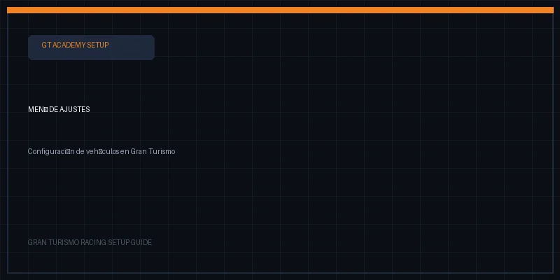
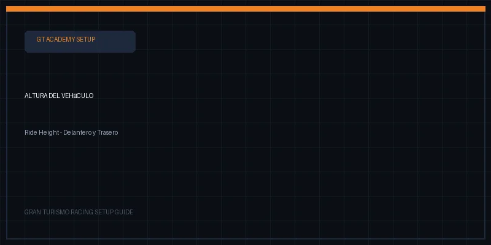
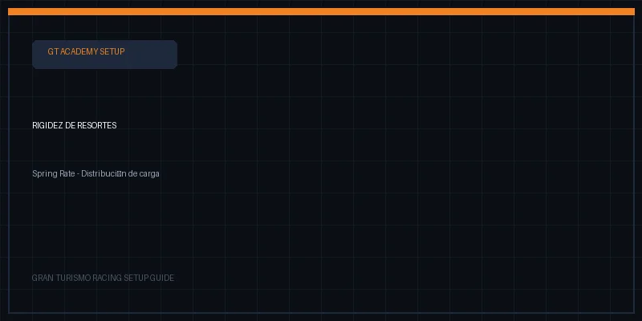
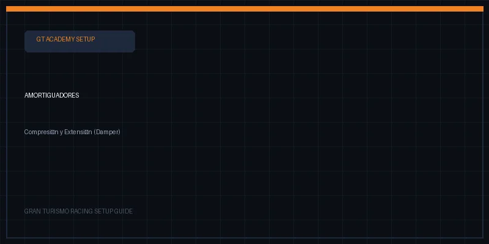
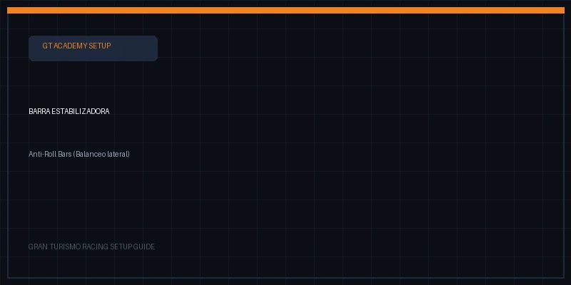
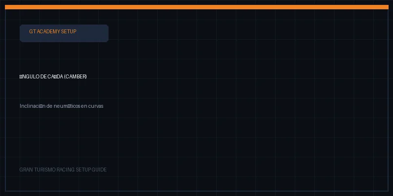
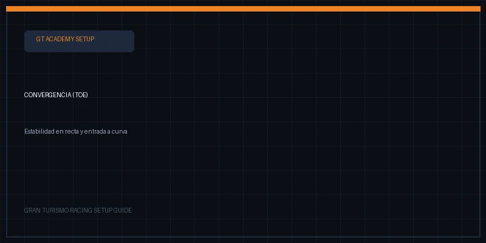
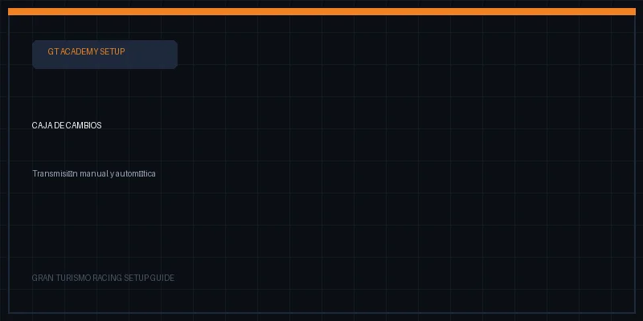
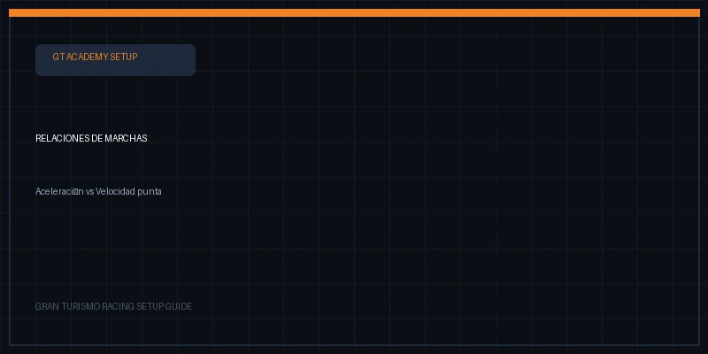

En Gran Turismo 6, cada décima de segundo se gana en el taller. Conoce los tres pilares indispensables: suspensión, transmisión y diferencial de deslizamiento limitado (LSD).
En Gran Turismo 6, hacer un setup de suspensión es crucial para mejorar el manejo y el rendimiento de tu automóvil en diferentes tipos de circuitos y condiciones de pista.
En el menú principal o garaje, accede a la sección de ajustes de coches o tuneo para personalizar la suspensión de tu vehículo.

Busca la pestaña etiquetada como "Suspensión" para acceder a las opciones de altura, muelles y amortiguación.
Reducir la altura baja el centro de gravedad y mejora la estabilidad en curva rápida, pero bajarlo demasiado puede hacer que el coche haga tope en pianos y desniveles.

Controla la absorción de baches y el balanceo del chasis. Muelles más firmes agudizan la respuesta de dirección en pistas lisas.

Los amortiguadores regulan la velocidad con que se contrae y estira el resorte. Ajusta compresión y extensión para equilibrar estabilidad y absorción de kerbs.

Reduce la inclinación lateral en curvas. Una barra más dura adelante induce subviraje; más dura atrás favorece la rotación y el sobreviraje.

Un camber negativo (ruedas inclinadas hacia adentro) maximiza el parche de contacto en pleno apoyo lateral, ofreciendo mayor agarre en curvas prolongadas.

Convergencia positiva estabiliza en línea recta; convergencia negativa (toe-out) en el eje delantero agudiza la entrada a curva cerrada.

El setup de la caja de cambios es esencial para optimizar la velocidad punta y la aceleración del automóvil adaptándose a la recta principal de cada circuito sin perder tracción al salir de curvas lentas.
Dentro del menú de ajustes, selecciona la caja de cambios personalizable para ajustar la relación final y cada marcha individualmente.

Alinea las RPM de cambio con el rango de potencia máxima. Ajusta la última marcha para alcanzar la velocidad máxima al final de la recta sin llegar al limitador antes de tiempo.

En Gran Turismo 6, el diferencial autoblocante personalizable te permite calibrar tres parámetros fundamentales para domar la potencia y frenada:
Controla el nivel de precarga previa del diferencial. Un valor más alto hace que el bloqueo actúe de inmediato, dando solidez pero restando agilidad en cambios de apoyo rápidos.
Determina el grado de bloqueo al pisar el acelerador. Evita que la rueda interior patine, pero un exceso puede forzar sobreviraje de potencia o pérdida de tracción.
Bloquea ambas ruedas motrices durante deceleración intensa, garantizando estabilidad en frenadas violentas en línea recta antes de iniciar el viraje.
Página creada para la comunidad de Gran Turismo 6 (PS3) por Ricardo Polanco